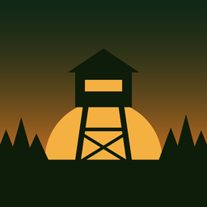

Revierblick
Büchsenlicht, Wind und Wetter für dein Revier – direkt auf dem Sperrbildschirm.
Bald kostenlos im App Store · für iPhoneWann endet heute das Büchsenlicht? Woher kommt der Wind zum Abendansitz? Revierblick beantwortet diese Fragen auf einen Blick – ohne die App öffnen zu müssen. Einfach das iPhone aus der Tasche nehmen und auf den Sperrbildschirm schauen.
So sieht es aus
Mi. 21. ⌖ Büchsenlicht bis 18:54
15:49
⌖ Ansitz · Mein RevierBeenden
3:04:48 bis Büchsenlicht-Ende 18:54
→ aus W 7 km/h12°◐ 77 %
Sperrbildschirm mit Ansitz-Modus und Widgets
⌖ Büchsenlicht bis18:54
↗ Wind 18:22aus SW 9
Sonnenuntergang18:22
Nieselregen12°
⌖ Mein Revier18:54Büchsenlicht bis
Home-Bildschirm – Farbe und Inhalte frei wählbar
Abbildungen nachgestellt, Werte beispielhaft.
Was Revierblick kann
BüchsenlichtBeginn morgens und Ende abends – als bürgerliche Dämmerung oder mit festen Minuten, wie du es brauchst.
Sonne und MondSonnenauf- und -untergang, Mondphase in Prozent sowie Mondauf- und -untergang – für Ansitz und Nachtjagd.
Wind und WetterDer Windpfeil zeigt, wohin die Witterung zieht. Wahlweise schon morgens die Vorhersage für den Sonnenuntergang.
Widgets überallAuf dem Sperrbildschirm, dem Home-Bildschirm und im Standby-Modus beim Laden auf dem Nachttisch.
Ansitz-ModusGroßes Feld auf dem Sperrbildschirm mit Countdown bis zum Ende des Büchsenlichts – auch in der Dynamic Island.
Mehrere ReviereRevier, Pacht oder Begehungsschein: Reviere per Karte anlegen, eines ist dein Hauptrevier für die Widgets.
Ohne Haken
- Kostenlos und ohne Werbung
- Kein Konto, keine Anmeldung
- Keine Standortabfrage – dein Revier legst du selbst auf der Karte fest
- Büchsenlicht, Sonne und Mond funktionieren auch ohne Netz im Revier
Deine Meinung ist gefragt
Revierblick entsteht im Umfeld unserer Jagdschule. Bevor die App im App Store erscheint, freuen wir uns über Ideen und Wünsche: Was würdest du dir noch wünschen? Schreib uns an jagdschulappsupport@gmail.com.
Revierblick entsteht im Umfeld unserer Jagdschule. Bevor die App im App Store erscheint, freuen wir uns über Ideen und Wünsche: Was würdest du dir noch wünschen? Schreib uns an jagdschulappsupport@gmail.com.